| 日付 | 2021年9月23日（木） |
|---|---|
| 山域 | 浅間周辺 |
| メンバー | 家族（妻、長女・10歳、長男・8歳） |
| 山行形態 | 子連れ日帰り |
| アクセス | 車 |
| ルート (Map) | 追分宿町営駐車場 (9:34) - (9:54) 登山口 - (11:20) 血の滝 - (11:50) おはぐろ池 - (12:17) 石尊山 (12:57) - (13:19) おはぐろ池 - (13:35) 血の滝 - (14:54) 追分宿町営駐車場 |
週末はあまり天気が良くなさそうなので、祝日に登山に行くことにする。
本日も遠出して、長野県軽井沢の石尊山へ。
浅間山の麓にある小さな山だ。
追分宿の町営無料駐車場に車を停める。標高990m。
便利な場所に立派な無料駐車場があるのはありがたい。
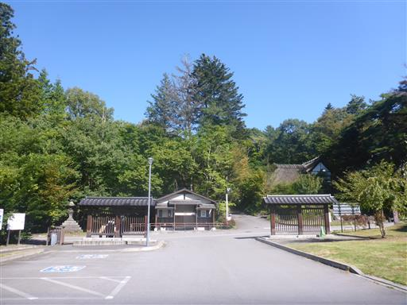
少し紅葉が始まっている。
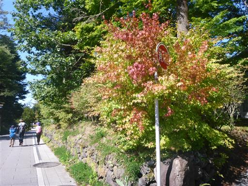
追分宿の町並みを歩いていく。
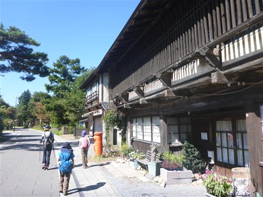
追分宿高札場が復元されている。
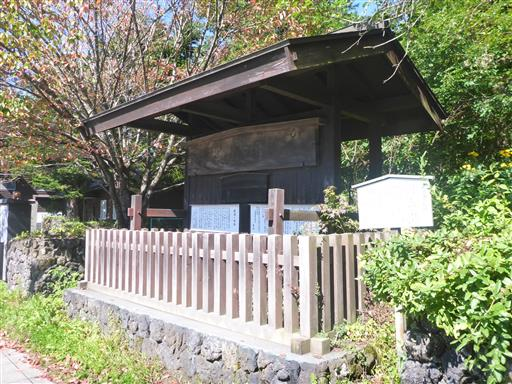
途中で右に折れて小さな道を歩いていく。道の両側は別荘が立ち並んでいる。
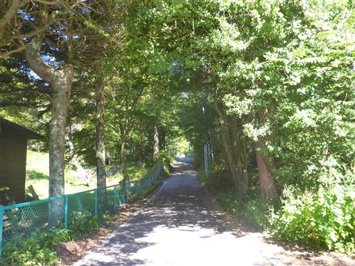
しばらく歩くと登山口に到着する。
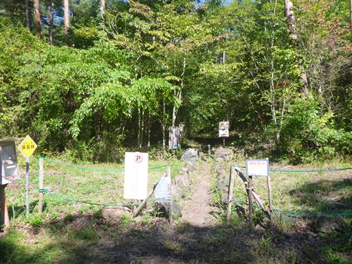
森の中を歩いていく。傾斜がほとんどなく楽ちんだ。
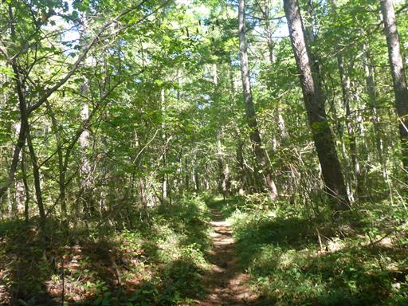
少し傾斜が出てくると階段が現れるのだが、
どう考えても必要のない階段だ。
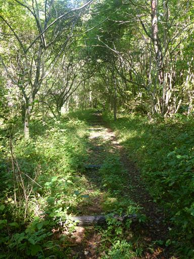
何度か林道を横切る。

血の滝。茶色い水が流れ落ちている。

そのすぐ上流に橋が架かっている。
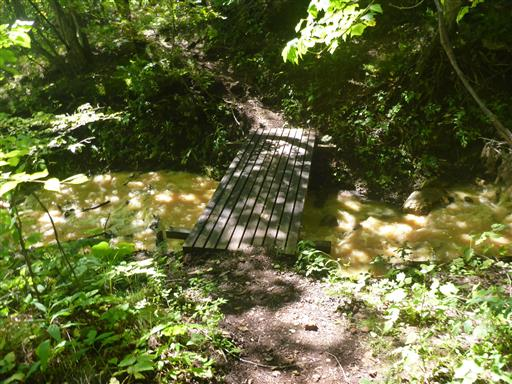
水が茶色い。まるで台風の後のような水の色だ。
なぜこんな色の水になるのだろう？
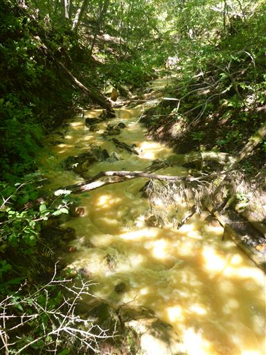
血の滝を過ぎると再び林道を横断する。ここに何台か車が停まっている。
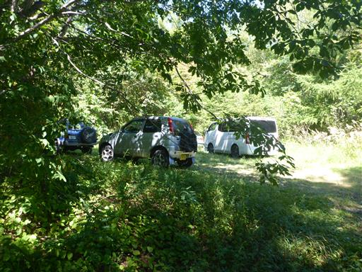
ズボンを見るとひっつき虫がたくさん付いている。
正体はこいつ。ヌスビトハギだ。
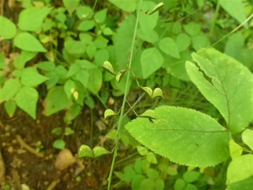
血の池の標識があるが、周囲に池は見当たらない。
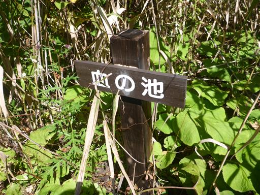
だいぶ上流まで来ると、水が透明になる。
川床は茶色い泥だ。
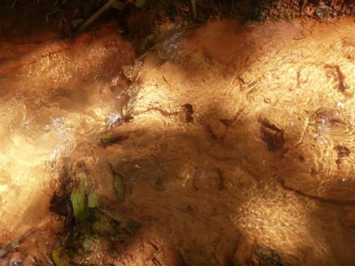
少し指でかき混ぜると、あっという間に川の水が茶色く濁る。
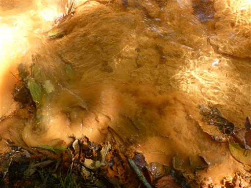
その先におはぐろ池という名の池がある。こちらが血の池ではないのだろうか？
堰き止められた板の下から水が流れ出しているため、水面は非常に汚い。
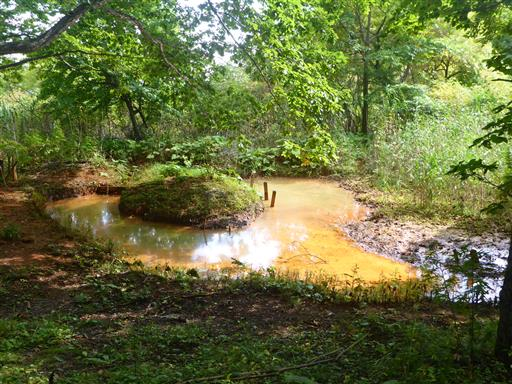
傾斜がきつくなった斜面を登ると、明るく開けた場所に出てくる。
山頂かと思ったが、もう少し先のようだ。
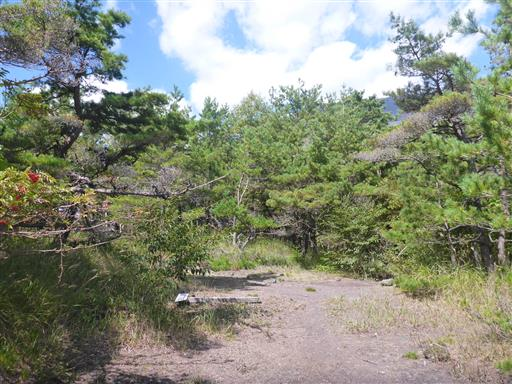
山頂直下はちょっと藪が茂っている。
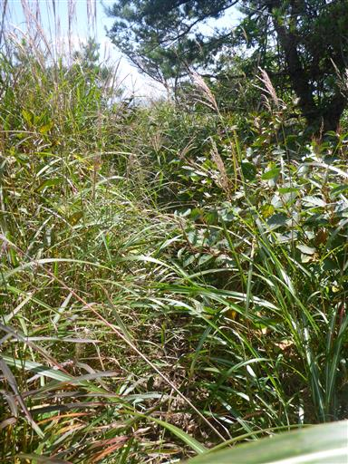
石尊山に到着。標高1668m。
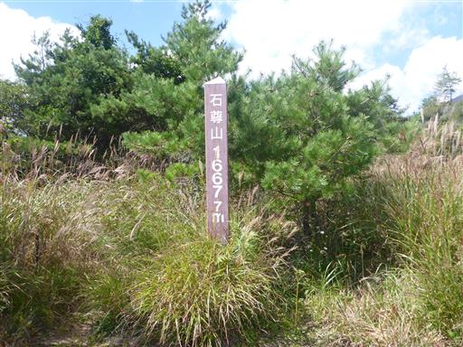
浅間山が目の前に横たわっている。ものすごく大きな図体だ。

反対側の軽井沢方面も展望が良い。
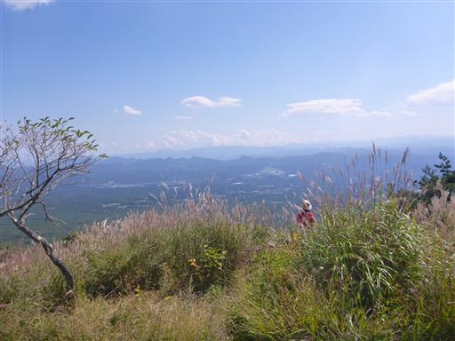
妙義山など西上州の山々が見えている。
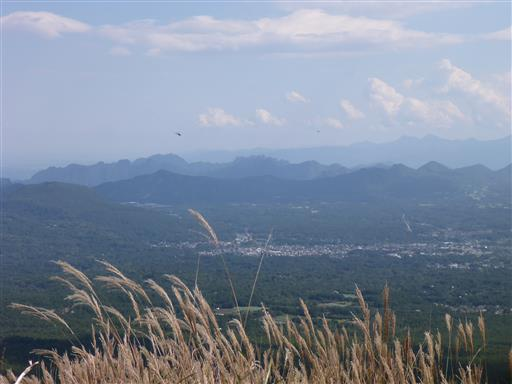
木の間からは八ヶ岳も見える。なかなか展望の良い山頂だ。
昼食をとったら元来た道を戻る。
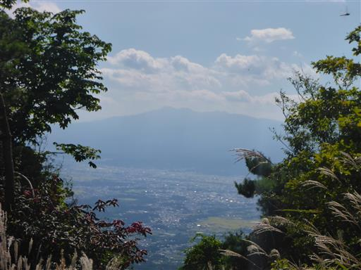
マルバダケブキの花に大量の虫がたかっている。
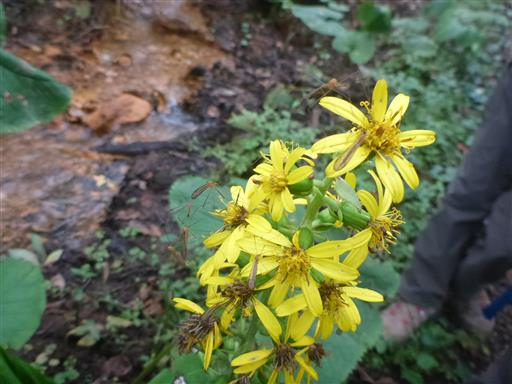
おはぐろ池の側に祠がある。往路では気付かなかった。
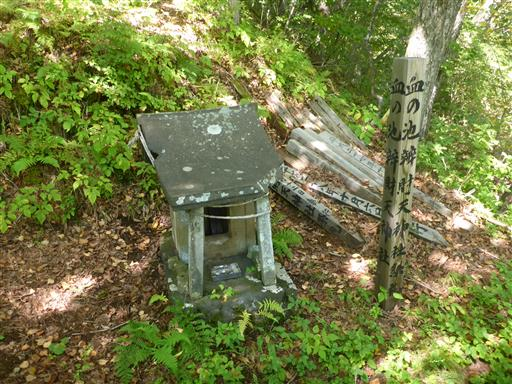
血の滝の側には大きな洞窟がある。これも往路には気付かなかった。
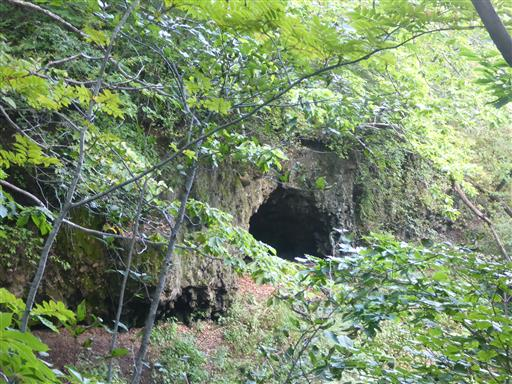
足元にバッタを発見。捕まえても二匹は離れない。
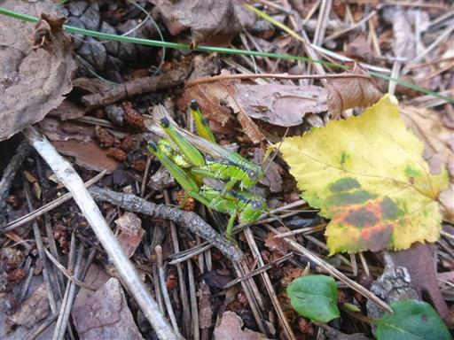
駐車場まで戻ってくる。
石尊山は山頂からの展望や、血の滝など見どころがあったが、
如何せん傾斜の緩い変わり映えのしない長い登山道は少々退屈だった。